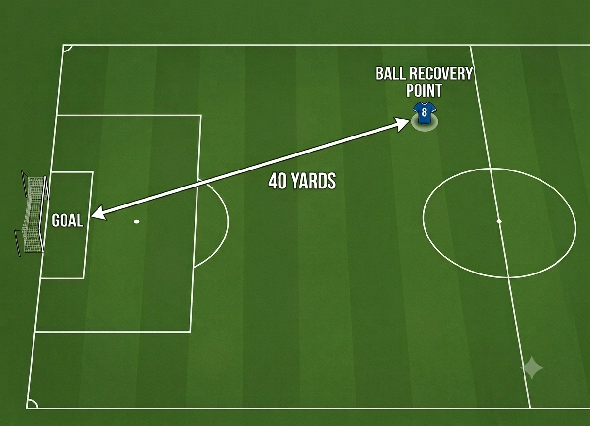
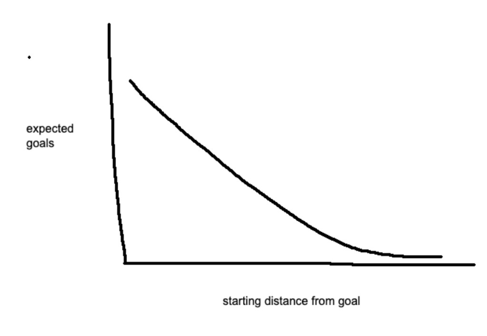

Field Position at the Women’s World Cup
Where a team wins the ball back is one of the simplest spatial signals in football—and a useful baseline for chance creation. This piece uses StatsBomb open event data from the 2019 and 2023 FIFA Women’s World Cups, with each team-year kept separate (USA 2019 vs USA 2023).
What “Field Position” Means
The field position metric is the straight-line distance from the center of the opponent’s goal to the point where that possession begins—typically where a team recovers the ball, receives a throw-in, or otherwise restarts play.
Teams that consistently win the ball closer to the opponent’s goal are pressing higher, forcing turnovers in dangerous areas, or otherwise starting attacks from more advanced field position. That does not guarantee goals on its own—but it changes the baseline for how valuable each possession should be.

Intuitively, the relationship is simple: the closer you start to goal, the more expected goals that possession should produce. Less distance to progress, less time for the defense to recover, and a shorter path into the penalty area. By the same logic, teams that force their opponents to start far from goal make it harder to generate goal scoring opportunities against them.

What the Data Shows
Using StatsBomb event data for the 2019 and 2023 FIFA Women’s World Cups, every possession gets a real starting coordinate from the first located event in that possession chain. Goal kicks, penalties, and penalty-kick rebound sequences are excluded because they begin from fixed restart spots (or sit on the penalty spot with outsized xG). When a possession ends in one or more open-play shots, those shots’ StatsBomb xG values are attached to that same possession.
Who Wins the Ball Closest?
Average starting distance from goal ranks how high each team-year typically begins possessions. Lower yards means closer to the opponent’s goal. To test whether that territory matters, the table pairs the metric with group-stage points and goal difference (knockout games are not scored as points) plus the furthest stage each team reached. Click a column header to sort.
Built from StatsBomb open-data events: true possession starts across the whole tournament, with shot xG summed onto any possession that ends in a shot. USA 2019 and USA 2023 are separate rows.
Starting closer to goal tracks group-stage success: across 56 team-years, average yards from goal correlates about −0.59 with group points and −0.67 with group goal difference (closer starts, better groups). The link to how far a team goes in the knockout bracket is weaker (~−0.36). Brazil 2023 and France 2019 have the closest starts; USA 2019 (Champions, +18 group GD) and Spain 2023 (Champions) sit near the high-press end; Thailand 2019 and Vietnam 2023 are deepest.
Residuals: Creating More Than the Start Suggests
Starting position sets an expectation. The residual asks a second question: given where a team typically begins possessions, do they produce more or less xG than the tournament-wide relationship predicts?
- Positive residual: more chance creation than expected from those starting spots—better progression, shot volume, or shot quality once the ball is won.
- Negative residual: possessions that start in similar areas but yield less xG.
Residual xG still lines up with outcomes—about +0.52 with group points, +0.68 with group GD, and +0.52 with furthest stage. Spain 2023 and USA 2019 lead among deep runs; France 2019 remains a cautionary case with very close starts but a negative residual after penalties are removed.
Where This Goes Next
These pieces—starting distance, opponent field position allowed, and xG margins—are the building blocks of a match-result model. For club seasons like the current Premier League, the same method needs commercial event data. Until then, open tournament datasets like the Women’s World Cup are the best free laboratory for the idea.